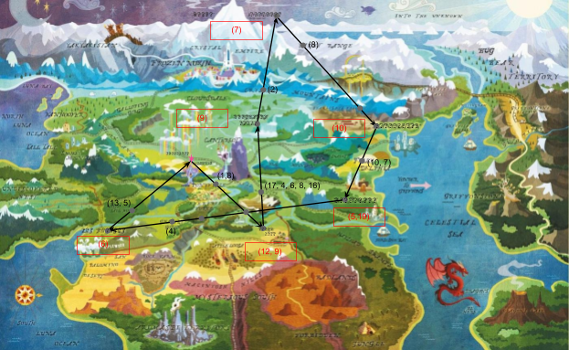

GREEN BOOTS
MAID OF THE MIST
LONG BRANCH SALOON
BALTIMORE CONVENTION CENTER
VENETIAN
EMPIRE STATE BUILDING
Each puzzle answer corresponds to a real-world location. However, this puzzlehunt isn't taking place in our world. It's taking place in the world of Equestria! Each of these real-world locations has a horse-punned name in the MLP universe.
| Answer | Real Location | MLP Location |
|---|---|---|
| GREEN BOOTS | Mount Everest | Mount Everhoof |
| MAID OF THE MIST | Niagara Falls | Neighagra Falls |
| LONG BRANCH SALOON | Dodge City | Dodge City / Dodge Junction |
| BALTIMORE CONVENTION CENTER | Baltimore | Baltimare |
| VENETIAN | Las Vegas | Las Pegasus |
| EMPIRE STATE BUILDING | Manhattan | Manehattan |
The flavor text, as well as the odd spacing and different sizing of the question marks and arrows, should clue the final step: looking up a world map of Equestria. There are a few such world maps, but the one used in the puzzle is the 2015 version that appears on the MLP wiki's Equestria page.
By resizing and overlaying the given image on the map, we can get the question marks to line up with the six place names, the gray dots to line up with the names of other Equestrian locations, and the star to lie on top of the star atop Twilight's Castle, the location everypony meets at when the story begins.

There are six red boxes, close to the names of the six horse-punned locations for the puzzle answers. Indexing into the puzzle answer with the red numbers, and into the place locations with the black numbers, gives the cluephrase PLACE BIGGER ON THE INSIDE, which solves to TARDIS.
| Location | Indices | Letters |
|---|---|---|
| Ponyville | 1, 8 | PL |
| Dodge City (LONG BRANCH SALOON) | 12, 9 | AC |
| Rambling Rock Ridge | 17, 4, 6, 8, 16 | EBIGG |
| Neighagra Falls (MAID OF THE MIST) | 9 | E |
| Crystal Mountains | 2 | R |
| Mount Everhoof (GREEN BOOTS) | 7 | O |
| Yaket Range | 8 | N |
| Manehattan (EMPIRE STATE BUILDING) | 10 | T |
| Fillydelphia | 10, 7 | HE |
| Baltimare (BALTIMORE CONVENTION CENTER) | 5, 19 | IN |
| Ghastly Gorge | 4 | S |
| Las Pegasus (VENETIAN) | 6 | I |
| White Tail Woods | 13, 5 | DE |
This meta went through several rounds of testsolving before reaching its final state. It started as a pure meta with an entirely different mechanic, but it testsolved too hard and no one got it. Every testsolver who figured out the horse-punned cities mentioned trying to plot them on a world map, so I decided to follow suit and make the puzzle work the way solvers wanted it to.
Annoyingly, the source material isn't consistent on the spellings of Equestrian locations, but luckily that isn't too important to the puzzle. However, this did have an unexpected side effect. The horse-punned version of Las Vegas is Las Pegasus in the show and most MLP media, but on the official Equestria map, it's spelled as Los Pegasus. Many teams thought Los Pegasus was a pun for Los Angeles (it's right next to Applewood!), and they sent many, many fruitless backsolve attempts of Los Angeles locations instead of Las Vegas ones.
The first version of this puzzle clued the Equestria world map less strongly, but it ended up being ambiguous which map to use, so more hints were added over time.
Including Twilight's Castle in the path was a last-minute addition, but it was clearly the correct choice story-wise. I got lucky that we noticed this before any regular puzzles were written, since the new path needed to visit different cities to work out.
The path was constructed to use at least 1 letter from each puzzle answer, but to use letters from the map when possible instead. One unfortunate side effect is that the feeder answers don't contribute much to the cluephrase, but the alternative was worse: when I used more answer letters, nutrimatic had a very, very easy time retriving "PLACE BIGGER ON THE INSIDE" without the map at all! I wrote a program to find the minimal valid solution that worked with a list of puzzle answers I was okay with.
I tried to get Vanhoover into the path, since My Little Pony: Friendship is Magic was produced in Vancouver, but it was too hard to do so while meeting the constraints of a good path. Oh well.